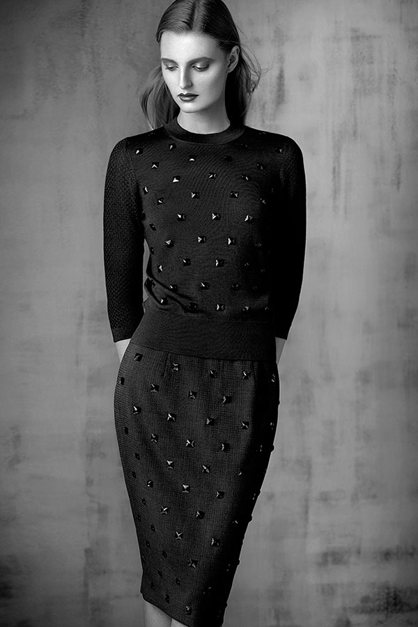

Texture superfine wool black beaded jacket and skirt
green ebony, quartz grey, blue mineral, gunmetal blue
Ultra fine cashmere texture black beaded boat neck
green ebony, quartz grey, blue mineral, gunmetal blue

Ultra fine cashmere texture graphic black beaded crew neck
black, green ebony, quartz grey, blue mineral, gunmetal blue
Superfine wool flannel with texture side pleated hemline jacket
green ebony, quartz grey, blue mineral, gunmetal blue
Flannel superfine wool flat front trouser
black, green ebony, quartz grey, blue mineral, gunmetal blue
Crocodile calf-skin single handle clutch
Flannel superfine wool dress with side fluid wrap
green ebony, quartz grey, blue mineral, gunmetal blue
Crocodile calf-skin single handle bag
Cashmere graphic open texture crew neck and scarf
black, coral mist, green ash, blue haze, aqua tone, magenta blue
Cashmere graphic open texture boat neck with slit pockets
black, coral mist, green ash, blue haze, aqua tone, magenta blue
Cashmere weather-resistant coat with fur wrap scarf
black with black, graphite with grey, ink black with indigo
Cashmere weather-resistant coat with fur wrap scarf
black with black, graphite with grey, ink black with indigo
“Second skin” cashmere two tone turtleneck
graphite with black, ink with black, green ebony with black, quartz grey with graphite, blue mineral with black, gunmetal blue with ink
Geometric superfine wool tapered leg trouser and jacket with ruffle border
graphite black, ink black

“Second skin” cashmere triple tone geometric crew neck
graphite with quartz grey and black, ink with gunmetal blue and black
Ultra fine cashmere funnel neck with shaped sleeve cuff
black, graphite, blue graphite, pearl white
Fine wool slim leg shaped hemline trouser
black, graphite, blue graphite
Crocodile with fine texture calf-skin zipper bag
Fine wool tunic top and skirt with front shaped hemline and embroidery stitching
black, graphite, blue graphite
Nappa triple stitch long glove
Fine wool jacket with detachable fluid hemline and embroidery stitching
black, graphite, blue graphite
Fine wool jacket with detachable fluid hemline and embroidery stitching
black, graphite, blue graphite
Ultra fine cashmere abstract texture v-neck
black, graphite, blue graphite, pearl white
Fine wool with abstract beaded lace tulle tunic top and skirt
black with black
Crocodile calf-skin envelope clutch